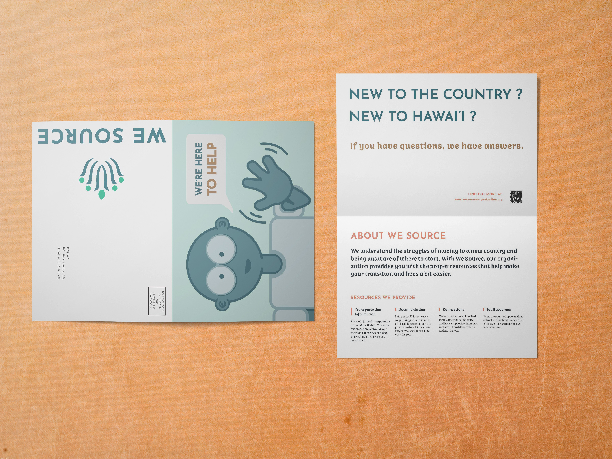
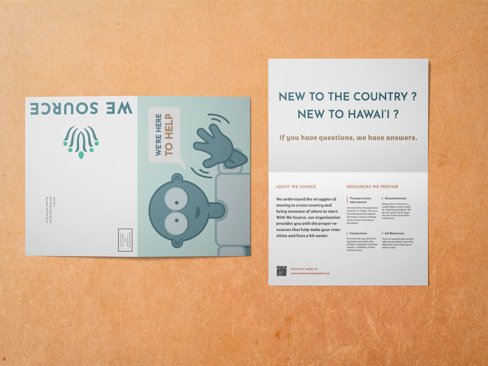
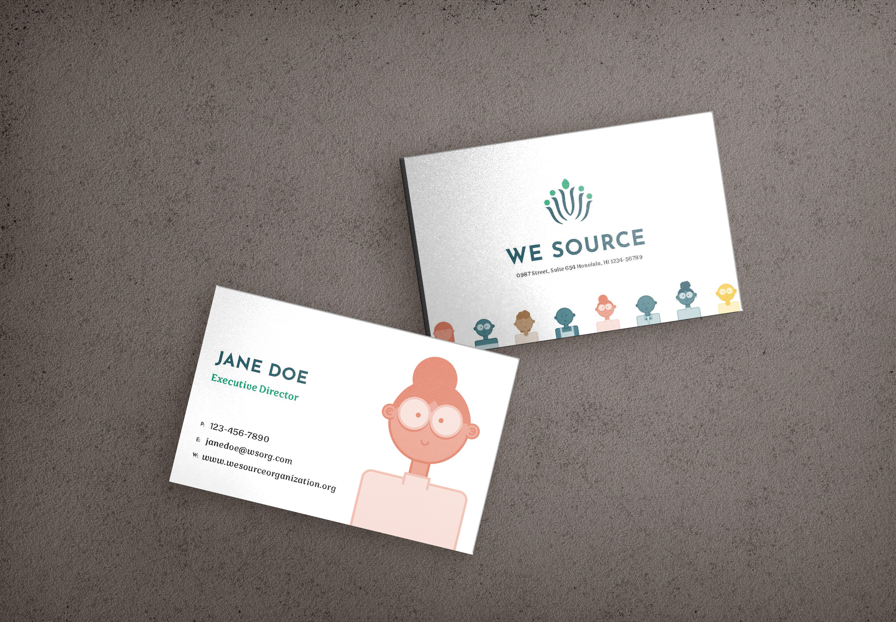

We Source
Non-Profit Organization for new ʻOhana's of Hawaiʻi
- Client
- Self
- Scope of Work
- Brand Identity
- Motion Graphic
- Role
- Design | Illustration
Insight
We Source is a non-profit organization based in Honolulu, Hawai'i that provides the proper resources to immigrants coming to Hawai’i and the dependent(s) of immigrant parents. We understand the difficulties of moving to a new country and being clueless about where to start, so we want to make that process easier for both parties.
About We Source
Logo Process
Research
Prior to sketching out ideas for a logo, I had to do research as to what a non-profit organizaztions is, existing organizations for immigrants, the resources Hawai'i has for immigrants, and statistics on the immigration population.
Doing my research allows me to fully understand how I should be approaching this project, and gives me a better understanding of what information is needed.
Sketching out Ideas
With the gathered information, I am more aware of what I would need to do to move on with this project. By implementing what I know and using the organizations Core Values—Community, Growth, Happiness, Knowledge and Stability, I sketched out these logo concepts.
Refining Logo
Taking into consideration of the feedback I was giving, it was decided to refine the floral, growth, community concept of a logo. I did a variety of ways to make the concept work. Whether that be thickening the strokes, or elongating them, having all circular florals, or to making a leaf-like shape that stands out.
Once I had finalized the logomark, I moved on to playing around with a couple colors palette and finding a good type that fit best with the logomark.
- 
- 
- 
See More Work
-

Exploration of Typography
Print
-

Amber Ayre
Brand Identity + UI Design